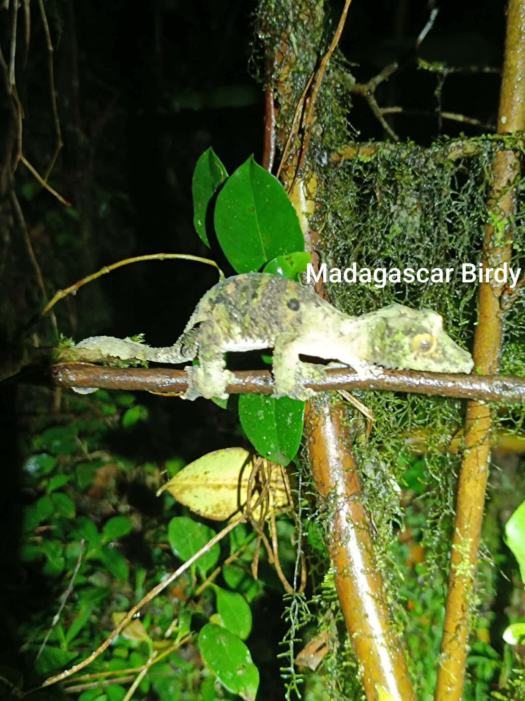
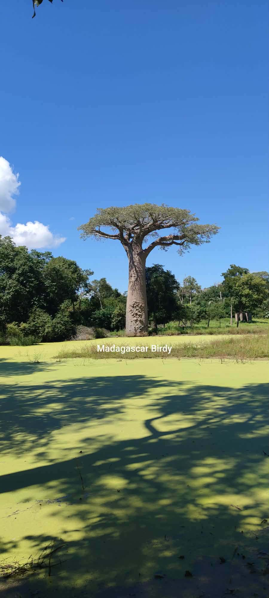
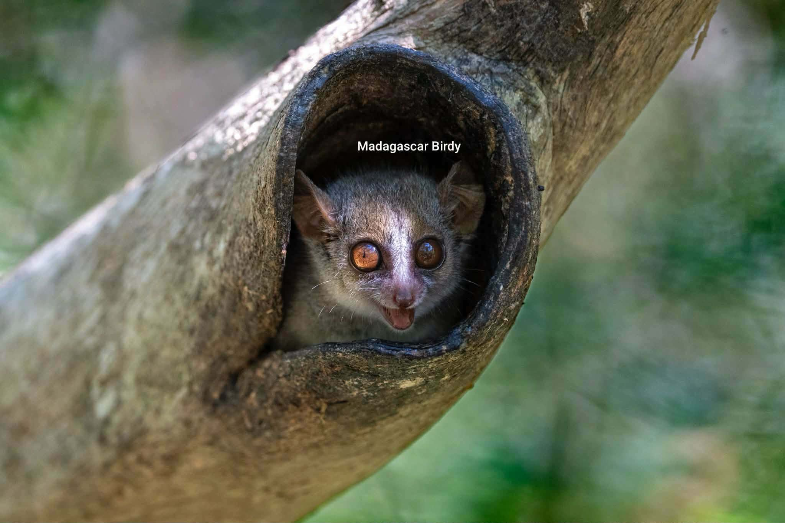
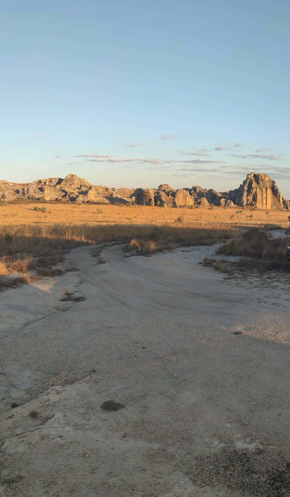
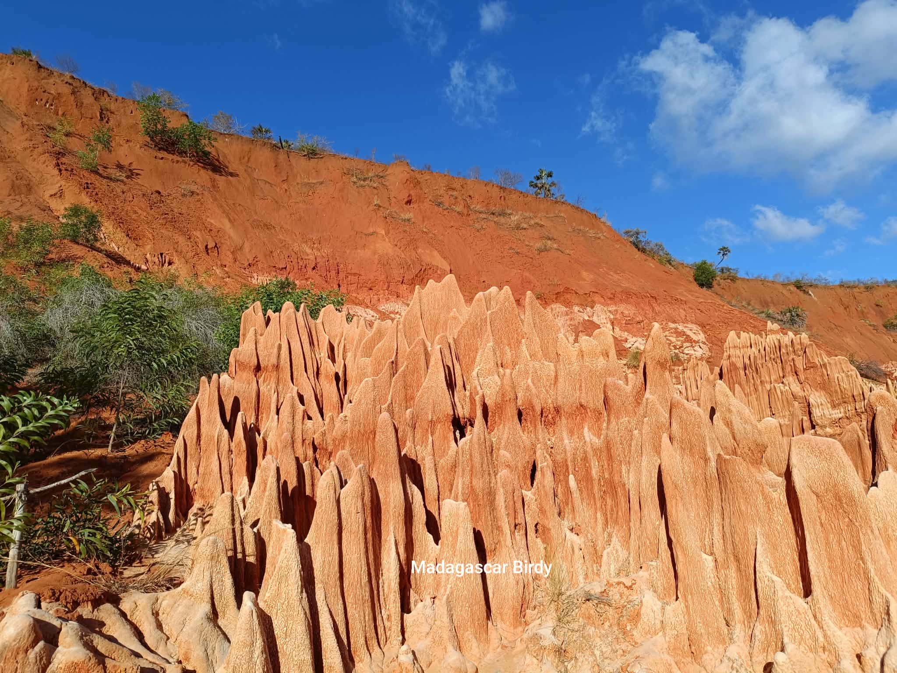
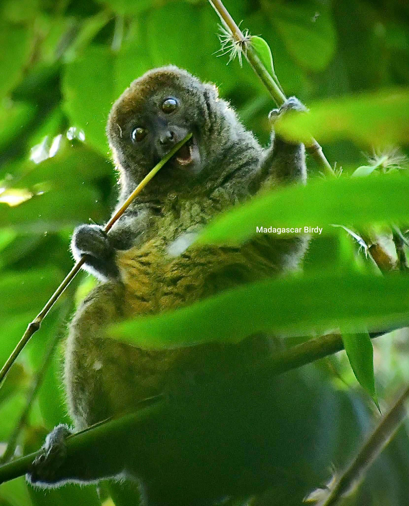

Madagascar Wildlife Photography Gallery
Stunning photographs of Madagascar's 100+ endemic bird species, unique wildlife, and pristine natural landscapes captured during our specialized birdwatching tours and eco-tourism adventures
Madagascar's Natural Wonders
Explore the breathtaking beauty of Madagascar's unique wildlife and landscapes through our photo gallery. Each image tells a story of conservation, adventure, and the incredible biodiversity found only on this island.
These images capture the essence of Madagascar's extraordinary biodiversity — from rare endemic birds found nowhere else on Earth to the diverse ecosystems that make this island a naturalist's paradise. Each photograph tells a story of discovery, conservation, and the incredible wildlife encounters that await on our tours.
All
Endemic Birds
Rainforest
Wildlife
Landscapes
Tours

Blue Coua

Panther Chameleon

Henst Goshhawk

Baobab Avenue

Sifaka

Crested Coua

Isalo Massif

Velvet Asity
Mangrove Estuary

Helmet Vanga

Malagasy Kingfisher

White Broad Owl

Madagascar Crukoo Roller

Madagascar Pratincole

Tsingy de Bemaraha

Pitta-like Ground Roller

Nuthatch Vanga

Madagascar Pygmy Kingfisher

Scaly Ground Roller

Schlegel's Asity

Short-legged Ground Roller

Sickle-billed Vanga

Yellow-bellied Sunbird-Asity

Ring-tailed Lemur